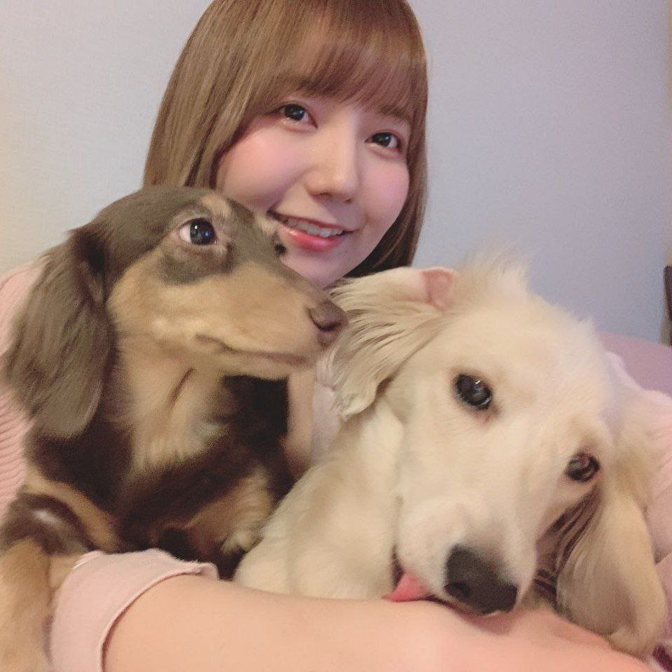

Kugumi & Mochi, los perros más amados de todos

¿Cual es Mochi?
Mochi es el perrito blanco,
sabemos que es macho,
pero no tenemos idea de su raza
¿Cual es Kumugi?
Kugumi es la perrita
chocolate sabemos
que es hembra
y muy cariñosa.
¿Y Azumi Waki?
Azumi Waki es su dueña,
adicional es una actriz de voz,
cantante, actriz y doglover.
¿Son familia?
En efecto, son la familia
Waki, conformada por
Azumi, Kugumi y Mochi.